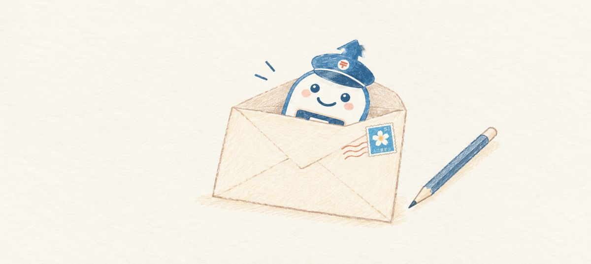

PPピコぬ郵政グループについて
PPピコぬ郵政グループは、ピコぬ市内の郵便局たちが「みんなでまとまった方が案内しやすいのでは」という思いから発足した共同運営組織です。
手紙や荷物の窓口業務を、情報発信の面からやんわりと繋いでいます。
「PP」は市内での通称として定着している呼び名で、正式な由来については資料によって諸説あり、局内でも統一された説明は特にありません。
当ホームページでは、各局共通のサービスご案内のほか、時々に気合いの入った記念切手情報などを掲載しています。
個別の郵便局の詳しい情報は、各局のページをお気軽にお訪ねくださいぬ。
お知らせ
- 2026年9月16日 記録町郵便局のホームページを開設しました。
- 2026年9月16日 手紙・はがき・荷物の発送についてのご相談を承っています。
- 2026年9月16日 郵便局へお越しいただくことが難しい方に向けた訪問サービスを準備しています。
手紙・はがき
荷物
お荷物
・荷物の発送
・荷物の受け取りに関するご相談
・集荷についてのご相談
切手
切手やはがきは、各郵便局の窓口でお求めいただけます。
取り扱う種類は時期や局によって異なる場合がありますので、記念切手やオリジナルデザインのはがきをお探しの場合は、あらかじめ最寄りの郵便局へお問い合わせください。
その他ご利用に関するご相談・ご案内
・郵便局の各種サービスのご案内
・郵便物・荷物の発送方法についてのご相談
・郵便局へ行くことが難しい方からのご相談
送り方がわからない場合や、どのサービスを利用すればよいか迷われた場合も、窓口でおたずねください。
手紙を書きましょう。
便箋を選び、言葉を紡ぎ、手で書く。
手紙とは、相手を想う「時間」そのものを届けるツールです。
「『お元気ですか』の一言でかまいません。上手な文章でなくても、あなたの文字だから伝わる思いがあります。」
―― ピコぬくん（ピコぬ市郵政グループ公式キャラクター）
―― ピコぬくん（ピコぬ市郵政グループ公式キャラクター）久しぶりの家族や友人に、手紙を書いてみませんか。
ピコぬ市郵政グループが、責任を持ってお送りするぬ！🕊🕊🕊
訪問サービス
記録町郵便局では、郵便局までお越しいただくことが難しい方からのご相談を承っています。
たとえば、次のような方が対象です。
・足腰が弱く、外出が難しい方
・病気やけがなどで外出を控えている方
・障害などにより、一人での外出が難しい方
・小さなお子さんがいて、郵便局まで出かけることが難しい方
郵便についてのご相談や、切手・はがきのお届け、荷物の発送など、まずはお気軽にお問い合わせください。
ご相談の内容をお伺いしたうえで、訪問の日時などをご案内いたします。
※詳しい対応内容や受付時間については、各郵便局までお問い合わせください。
店舗情報
| お問い合わせ | PPピコぬ市郵政グループ代表 |
|---|---|
| 所在地 | ピコぬ市中央2丁目1番地1 |
| 受付時間 | 9:00〜17:00（土・日、祝日は16：00まで） |
| 電話 | ぬぬ-ぬかピコ-0840（おはよう） |